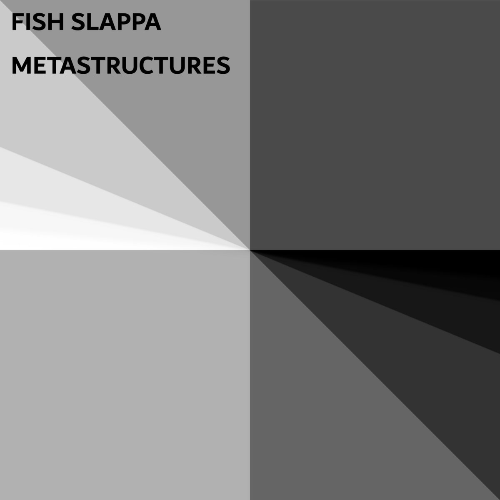
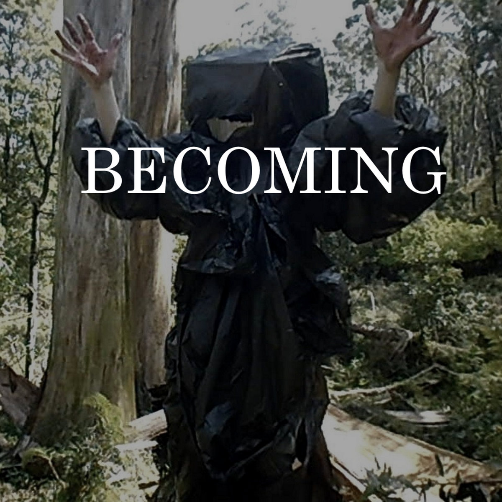

Live Performances
Online Performances
27/12/2020 - Soyandsynth Vol #31
This was an online performance I did as part of the #soyandsynth series organised by Soydivision Berlin, a Berlin-based Indonesian restaurant and experimental music venue. The #soyandsynth series is a monthly gig featuring musicians from around the globe. This was an online, streamed performance during the 2020 lockdown, so I was able to send in the video beforehand - it's 30 minutes of programmed music made in Reason with visuals.
4/10/2020 - RuidoViríco_#14
Online radio linkThis was another streamed online performance, organised this time by the people at Audiotalaia, a netlabel and performance community based in Barcelona. It was part of the 14th incarnation of their Ruido Viríco ("Viral Noise") series, a regular show that features ambient, electronic, and electroacoustic musicians. My set, which starts about 16:25 in and continues for around 30 minutes, was compiled in ChucK code, a programming language for sound synthesis and manipulation. The set was originally streamed on Twitch, where it can unfortunately no longer be found, but the audio from the gig is still up on the site. My performance with full visuals as originally aired is also mirrored on my YouTube channel here.
1/8/2020 - Fuzz Bat Live Stream Number Tretton
This video was used for another streamed international performance in the lockdown of 2020, this time an event organised by Fuzz Bat Gigs in Edinburgh. It was also performed in ChucK, which I can be seen operating in the video, but only as a performance interface for field recordings, synthesiser, and percussion sections pre-written in Reason. My live version of the track Fmpp3, originally from my digital album Music for Waves, was later featured on a charity compilation of songs performed at Fuzz Bat events, which can be found here.
26/6/2020 - Metastructures (Online gig)
This online gig was organised by myself on my YouTube channel to promote the launch of my EP Metastructures, a series of experiments in combining aleatoric techniques with MIDI digital synthesisers in ChucK and Reason. Featuring guests playin all sorts of electronic music from across Australia and the world, including Ssevern, Lush Death, Lesbian Merzbow, Logic Lost, and Time Pop (now Doveland). The gig went for about 4 hours and is still available to view. My set, which is just the EP as on Bandcamp with visuals, starts at 3:38:15 and goes until the end of the stream.
28/3/2020 - Live n Solo at the Bowlo #2
This was the first streaming gig I ever played in 2020, organised by the extremely cool Backbone Arts in Brisbane. It was also the first performance I did entirely in ChucK, a language I would go on to use in my later online gigs. My set is at the beginning of the video, and goes for half an hour. It's all manipulated recordings of me at the piano and sounds generated within ChucK. I edited the audio from this stream and released it on my Bandcamp afterwards here. Most of the code used in the performance can also be found in this Github repository (excluding the parts that rely on the pre-recorded piano files).
Offline Performances
25/10/2020 - A Meter Apart: Fish Slappa
This video is an excerpt from a live performance I did at the Northern Centre for Contemporary Art in Darwin, the first of their performance series A Meter Apart. The concept for A Meter Apart was to have the audience seated on chairs one metre apart from each other to discourage talking or other interaction, and to play music suited for Deep Listening. The music for this performance was written by me in ChucK so that it could be triggered live in command prompt, creating the distinctive 8-window setup that you see in the recording. All of the text on the screen is real-time feedback from the programs that you hear.
27/8/2019 - Fish Slappa Live at Bar Oussou
This is an extremely short live set I played for an open mic at Bar Oussou in Brunswick, featuring a few songs I had been working on throughout the course of the year. It resembles many of the open mic sets I played in 2019, but it was the only one of which we ever got a proper recording of (thanks Ash!) This was around the time when I started playing more and more gigs featuring a laptop only, a strategy which I've kept to be in line with the DIY aesthetics that motivate much of my music.
19/7/2019 - Sluggo is Lit and Friends at Happy Yess
This was a gig organised in 2019 by a number of local Darwin musicians who I know (including my brother) at the Happy Yess, an iconic performance venue. The tracks in this set were the drafts that would later become my digital album Music for Waves, when a few more ideas were added.
27/4/2018 - Northern Territory Battle of the School Bands Final
This was my two-song set at the Battle of the School Bands in 2018, organised by the Northern Territory Music School, where I played when I was in year 12. Entrants could play a short set of their own original music, which was judged by the panel of NTMS staff. This was one of the last sets that I played featuring both my MPC controller and drum kit, a setup I used to use for most of my early gigs.
21/4/2017 - Northern Territory Battle of the School Bands Final
This was my set from the previous year's Battle of the School Bands. This was during my brief period of obsession with sampling and plunderphonic techniques, which never resulted in much fruitful released music but which taught me a great deal about audio editing and sample culture.
Music Videos
Becoming - Music Video
This is a music video I created with several of my friends for a single that I released in 2019, Becoming. It's a track that I synthesised from scratch, a technique that I tried that year to push my boundaries in digital composition and writing.
To Kill A Dead Man - Soundtrack Redux
This is not so much a music video as much as music to accompany a video - a soundtrack I made for somebody else's film. The film in question is To Kill A Dead Man, a short black & white film released by the band Portishead with their own original music. I used the visuals from the original film and created my own music in Reason to play over them. It was intended as a demo for my ability to create film soundtracks, something which I am yet to do in an official capacity. The film with the original music can be found here.
Albums/Releases
Metastructures - EP
This EP resulted from a series of experiments randomly generating MIDI data within certain parameters through ChucK code. It ranges from calm ambient music to harsh noise, but all of the tracks are based in the same experimental computer-based methodology.
Live Session 28/3/2020

This is an edited version of the Backbone gig visible in the Online Performances section of this page, released as a two-track EP.
Bandcamp linkMusic for Waves

This album was created through the same technique as Becoming/Unbecoming - synthesis from scratch in a combiation of Reaper, Reason, and other DAWs. Although it originated as a self-imposed compositional challenge, this limitation ended up creating some of the music that I have been the happiest to release in all my years writing and performing. This is the album that I most often hand out as a demo to prospective labels and venues, and the only full-length release I haven't (mostly) scrubbed from the internet out of embarrassment years after releasing it.
Becoming/Unbecoming - EP
These are two tracks created using a number of audio synthesis and manipulation techniques on my laptop. These were some of my first truly laptop-only audio experiments - the idea being, in the spirit of DIY electronic music, to push as far as I could with no samples, no instruments, only the computer's ability to create sound and edit what it has created. Each song runs through a number of moods and melodic ideas, but overall the two tracks, especially the latter, are a lot more harsh noise-influence than much of my other music.
The Raven - EP

This is the earliest Fish Slappa release that I have the courage to keep up on my Bandcamp - it's a series of short tracks I made in 2015 all edited together. It's essentially a bunch of vignettes on the theme of ravens. The mixing is questionable at best, and a lot of it is made up of half-hearted melodic ideas that go nowhere, but I think it's pretty good considering that I was 14 at the time.
Bandcamp linkCompilations where my music has been featured
Justice Yeldham - Polished Turds Vol. 1

This is a compilation of remixes based on live recordings by Justice Yeldham, a.k.a. Lucas Abela, quite possibly the world's most famous glass musician. My entry on the compilation, the 14th track, is a minimal techno track constructed with edited percussive cuts from Yeldham's glass playing, chopped and sequenced in Reason. All proceeds from the compilation go towards indigenous justice organisations.
Bandcamp linkFuzz Bat Gigs - Wonderous Christmas Extravaganza Vol. 3

This is a compilation of tracks played at gigs organised by Scottish DIY events crew Fuzz Bat Gigs during 2020. My live version of Fmpp3 is the fifth track.
Bandcamp link